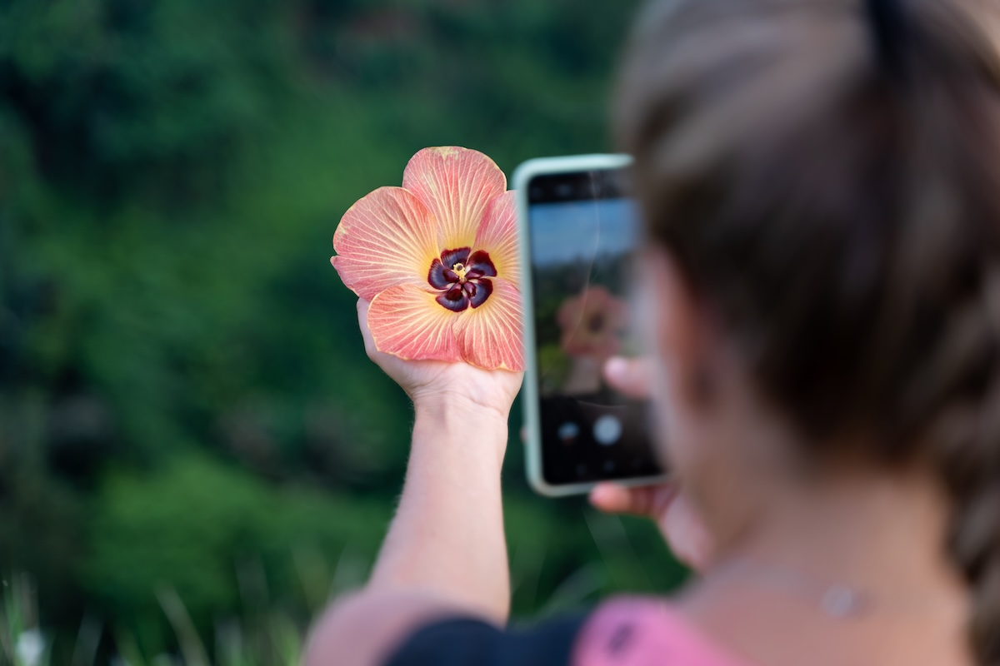

Mobil Fotoğrafçılıkta Diyafram Etkisini Anlamak ve Ustalaşmak

Mobil fotoğrafçılık son yıllarda ciddi bir dönüşüm geçirdi. Artık akıllı telefonlarla çekilen fotoğraflar, birçok durumda profesyonel makinelerle yarışabilecek seviyeye ulaştı. Bu gelişimin arkasında ise yapay zekâ destekli kamera yazılımları, gelişmiş sensörler ve özellikle de “diyafram” kontrolü gibi fotoğrafçılığın temel unsurları yer alıyor.
Bu yazıda mobil fotoğrafçılıkta diyaframın ne anlama geldiğini, nasıl çalıştığını ve daha etkileyici fotoğraflar çekmek için nasıl kullanabileceğinizi detaylı şekilde ele alacağız.
Diyafram Nedir? Temel Mantık
Diyafram, kameraya giren ışık miktarını kontrol eden mekanizmadır. Fotoğrafçılıkta “f değeri” ile ifade edilir (örneğin f/1.8, f/2.4 gibi).
- Düşük f değeri (f/1.8) → Daha fazla ışık → Daha parlak fotoğraf + daha bulanık arka plan
- Yüksek f değeri (f/8 gibi) → Daha az ışık → Daha net (derin alan) fotoğraf
Mobil cihazlarda fiziksel diyafram çoğu zaman sabittir. Ancak yazılımsal diyafram simülasyonu ve bazı üst segment cihazlarda değişken diyafram teknolojisi sayesinde bu etkiyi kontrol etmek mümkün hale gelmiştir.
Mobil Fotoğrafçılıkta Diyaframın Rolü
Akıllı telefonlarda diyafram, klasik fotoğraf makinelerindeki kadar fiziksel olarak değiştirilebilir olmasa da etkisi oldukça büyüktür.
1. Alan Derinliği (Arka Plan Bulanıklığı)
Mobil fotoğrafçılıkta diyaframın en çok hissedildiği alan burasıdır.
- f/1.8 gibi düşük değerler: Portre çekimlerinde arka planı bulanıklaştırır (bokeh efekti)
- f/4 ve üzeri (simülasyon): Manzara çekimlerinde her şeyi net gösterir
Telefonlarda “Portre Modu” aslında diyafram etkisinin yazılımla taklit edilmesidir.
2. Işık Performansı (Low Light)
Diyafram açıklığı büyüdükçe sensöre daha fazla ışık girer.
Bu da şu avantajları sağlar:
- Gece çekimlerinde daha az noise (gren)
- Daha net ve parlak görüntü
- Daha hızlı çekim süresi
Bu yüzden gece fotoğrafçılığı için geniş diyaframlı (örneğin f/1.6 - f/1.8) lensler büyük avantaj sağlar.
3. Keskinlik ve Detay
Her ne kadar düşük f değeri daha fazla ışık sağlasa da, bazı durumlarda görüntü keskinliği düşebilir.
Mobilde bu durum genellikle yazılımla dengelenir. Ancak şunu bilmek önemli:
- Portrelerde düşük diyafram idealdir
- Mimari ve manzara çekimlerinde daha yüksek diyafram tercih edilmelidir
Mobilde Diyafram Nasıl Kontrol Edilir?
Mobil cihazlarda diyafram kontrolü üç şekilde yapılır:
- Portre Modu
- Arka plan bulanıklığını artırıp azaltabilirsiniz
- Çekim sonrası bile düzenlenebilir
- Pro (Manuel) Mod
- Bazı telefonlarda diyafram yerine ISO ve enstantane ile ışık dengesi sağlanır
- Diyafram sabit olsa bile benzer etki oluşturabilirsiniz
- Yapay Zekâ ve Yazılım
- Sahneyi analiz eder
- Otomatik olarak en uygun diyafram etkisini simüle eder
Hangi Çekimde Hangi Diyafram Etkisi Kullanılmalı?
Portre Fotoğrafları
- Düşük diyafram (f/1.8 civarı)
- Güçlü arka plan bulanıklığı
- Konu ön plana çıkar
Manzara Fotoğrafları
- Yüksek diyafram (simülasyon)
- Her şey net görünür
- Derinlik hissi artar
Gece Çekimleri
- En düşük diyafram değeri
- Maksimum ışık girişi
- Daha az gürültü
Ürün Fotoğrafları
- Orta seviyede diyafram
- Ürün net, arka plan hafif bulanık
Mobil Fotoğrafçılıkta Diyafram Kullanımı İçin İpuçları
- Portre çekerken arka planı sade seçin, bokeh daha etkili olur
- Gece çekimlerinde sabit durmaya özen gösterin
- Manzara çekerken HDR modunu diyafram etkisiyle birlikte kullanın
- Portre modunda diyafram değerini sonradan düzenleyerek en iyi sonucu bulun
- Işığın geliş açısını kontrol ederek diyafram etkisini güçlendirin
Gerçek Diyafram vs Yazılımsal Diyafram
Mobil fotoğrafçılıkta önemli bir ayrım vardır:
- Gerçek diyafram: Fiziksel lens açıklığı (bazı üst segment telefonlarda var)
- Yazılımsal diyafram: Derinlik haritası ile oluşturulan bulanıklık
Çoğu kullanıcı için yazılımsal diyafram yeterlidir. Ancak profesyonel işler için gerçek diyafram avantaj sağlar.
Sonuç: Diyaframı Anlayan Daha İyi Fotoğraf Çeker
Mobil fotoğrafçılıkta iyi sonuçlar almak yalnızca iyi bir telefona sahip olmakla ilgili değildir. Işığı, kompozisyonu ve özellikle diyafram etkisini doğru kullanmak büyük fark yaratır.
Diyaframı bilinçli kullandığınızda:
- Portreleriniz daha profesyonel görünür
- Gece çekimleriniz daha net olur
- Fotoğraflarınız daha derin ve etkileyici hale gelir
Kısacası, cebinizdeki kamera aslında düşündüğünüzden çok daha güçlü. Onu nasıl kullandığınız ise tamamen sizin fotoğrafçılık bilginize bağlı.